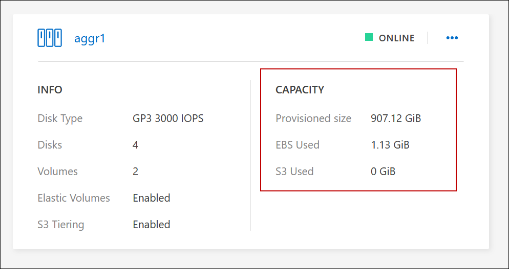
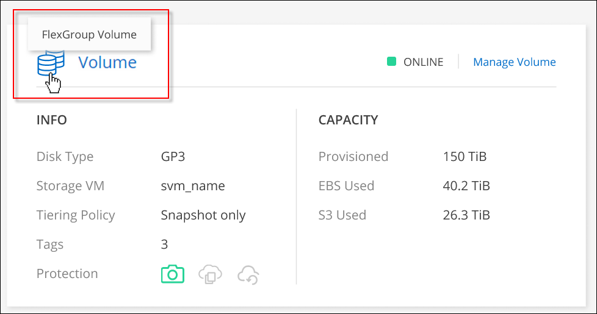

Amazon Web Services
Amazon Web Services
 Google Cloud
Google Cloud
 Microsoft Azure
Microsoft Azure
 Richiedi modifiche alla documentazione
Richiedi modifiche alla documentazione Modifica questa pagina
Modifica questa pagina Scopri come collaborare
Scopri come collaborareGestire i volumi esistenti
Collaboratori
BlueXP consente di gestire volumi e server CIFS. Inoltre, richiede di spostare i volumi per evitare problemi di capacità.
Gestire i volumi
Puoi gestire i volumi in base alle tue esigenze di storage. È possibile visualizzare, modificare, clonare, ripristinare ed eliminare i volumi.
-
Dal menu di navigazione a sinistra, selezionare Storage > Canvas.
-
Nella pagina Canvas, fare doppio clic sull’ambiente di lavoro Cloud Volumes ONTAP su cui si desidera gestire i volumi.
-
Nell’ambiente di lavoro, fare clic sulla scheda Volumes (volumi).

-
Nella scheda Volumes (volumi), selezionare il titolo del volume desiderato, quindi fare clic su Manage volume (Gestisci volume) per accedere al pannello di destra Manage Volumes (Gestisci volumi).
Attività Azione Consente di visualizzare informazioni su un volume
In azioni volume nel pannello Manage Volumes (Gestisci volumi), fare clic su View volume details (Visualizza dettagli volume).
Scarica il comando NFS mount
-
In azioni volume nel pannello Manage Volumes (Gestisci volumi), fare clic su Mount Command (comando di montaggio).
-
Fare clic su Copy (Copia).
Clonare un volume
-
In azioni volume nel pannello Manage Volumes (Gestisci volumi), fare clic su Clone the volume (Clona volume).
-
Modificare il nome del clone secondo necessità, quindi fare clic su Clone.
Questo processo crea un volume FlexClone. Un volume FlexClone è una copia point-in-time scrivibile efficiente in termini di spazio, in quanto utilizza una piccola quantità di spazio per i metadati e consuma solo spazio aggiuntivo quando i dati vengono modificati o aggiunti.
Per ulteriori informazioni sui volumi FlexClone, vedere "Guida alla gestione dello storage logico di ONTAP 9".
Modifica tag di volume (solo volumi di lettura/scrittura)
-
Nella sezione Volume Actions (azioni volume) del pannello Manage Volumes (Gestisci volumi), fare clic su Edit volume tags (Modifica tag volume) per modificare il tag del volume assegnato al volume selezionato.
-
Inserire il valore e la chiave del tag del volume nei campi forniti.
-
Per includere tag aggiuntivi, fare clic su Aggiungi nuovo tag.
-
Fare clic su Save (Salva).
Modifica di un volume (solo volumi di lettura/scrittura)
-
In azioni volume nel pannello Manage Volumes (Gestisci volumi), fare clic su Edit volume settings (Modifica impostazioni volume)
-
Modificare la policy Snapshot del volume, la versione del protocollo NFS, l’elenco di controllo degli accessi NFS (policy di esportazione) o le autorizzazioni di condivisione, quindi fare clic su Apply (Applica).

Se sono necessarie policy Snapshot personalizzate, è possibile crearle utilizzando System Manager. Eliminare un volume
-
In azioni volume nel pannello Manage Volumes (Gestisci volumi), fare clic su Delete the volume (Elimina volume).
-
Nella finestra Delete Volume (Elimina volume), immettere il nome del volume che si desidera eliminare.
-
Fare nuovamente clic su Delete per confermare.
Crea una copia Snapshot on-demand
-
In azioni di protezione nel pannello Manage Volumes (Gestisci volumi), fare clic su Create a Snapshot copy (Crea una copia Snapshot).
-
Modificare il nome, se necessario, quindi fare clic su Crea.
Ripristinare i dati da una copia Snapshot a un nuovo volume
-
In azioni di protezione nel pannello Gestisci volumi, fare clic su Ripristina da copia Snapshot.
-
Selezionare una copia Snapshot, immettere un nome per il nuovo volume, quindi fare clic su Restore (Ripristina).
Modificare il tipo di disco sottostante
-
In azioni avanzate nel pannello Gestisci volumi, fare clic su Cambia tipo di disco.
-
Selezionare il tipo di disco, quindi fare clic su Cambia.
BlueXP sposta il volume in un aggregato esistente che utilizza il tipo di disco selezionato oppure crea un nuovo aggregato per il volume. Modificare la policy di tiering
-
In azioni avanzate nel pannello Gestisci volumi, fare clic su Modifica policy di tiering.
-
Selezionare un altro criterio e fare clic su Cambia.
BlueXP sposta il volume in un aggregato esistente che utilizza il tipo di disco selezionato con il tiering oppure crea un nuovo aggregato per il volume. Eliminare un volume
-
Selezionare un volume, quindi fare clic su Delete (Elimina).
-
Digitare il nome del volume nella finestra di dialogo.
-
Fare nuovamente clic su Delete per confermare.
-
Ridimensionare un volume
Per impostazione predefinita, un volume aumenta automaticamente fino a raggiungere le dimensioni massime quando lo spazio è esaurito. Il valore predefinito è 1,000, il che significa che il volume può aumentare fino a 11 volte le sue dimensioni. Questo valore è configurabile nelle impostazioni di un connettore.
Se è necessario ridimensionare il volume, è possibile farlo attraverso "Gestore di sistema di ONTAP". Durante il ridimensionamento dei volumi, tenere in considerazione i limiti di capacità del sistema. Accedere alla "Note di rilascio di Cloud Volumes ONTAP" per ulteriori dettagli.
Modificare il server CIFS
Se si modificano i server DNS o il dominio Active Directory, è necessario modificare il server CIFS in Cloud Volumes ONTAP in modo che possa continuare a fornire storage ai client.
-
Dalla scheda Panoramica dell’ambiente di lavoro, fare clic sulla scheda funzionalità nel pannello a destra.
-
Nel campo CIFS Setup (Configurazione CIFS), fare clic sull’icona matita per visualizzare la finestra CIFS Setup (Configurazione CIFS).
-
Specificare le impostazioni per il server CIFS:
Attività Azione Selezionare Storage VM (SVM)
Selezionando la SVM (Storage Virtual Machine) Cloud Volume ONTAP vengono visualizzate le informazioni CIFS configurate.
Dominio Active Directory da unire
L’FQDN del dominio Active Directory (ad) a cui si desidera che il server CIFS si unisca.
Credenziali autorizzate per l’accesso al dominio
Il nome e la password di un account Windows con privilegi sufficienti per aggiungere computer all’unità organizzativa (OU) specificata nel dominio ad.
Indirizzo IP primario e secondario DNS
Gli indirizzi IP dei server DNS che forniscono la risoluzione dei nomi per il server CIFS. I server DNS elencati devono contenere i record di posizione del servizio (SRV) necessari per individuare i server LDAP di Active Directory e i controller di dominio per il dominio a cui il server CIFS si unisce. Ifdef::gcp[] se si sta configurando Google Managed Active Directory, ad è accessibile per impostazione predefinita con l’indirizzo IP 169.254.169.254. endif::gcp[]
Dominio DNS
Il dominio DNS per la SVM (Storage Virtual Machine) di Cloud Volumes ONTAP. Nella maggior parte dei casi, il dominio è lo stesso del dominio ad.
Nome NetBIOS del server CIFS
Un nome server CIFS univoco nel dominio ad.
Unità organizzativa
L’unità organizzativa all’interno del dominio ad da associare al server CIFS. L’impostazione predefinita è CN=computer.
-
Per configurare AWS Managed Microsoft ad come server ad per Cloud Volumes ONTAP, immettere OU=computer,OU=corp in questo campo.
-
-
Fare clic su Set (Imposta).
Cloud Volumes ONTAP aggiorna il server CIFS con le modifiche.
Spostare un volume
Spostare i volumi per l’utilizzo della capacità, migliorare le performance e soddisfare i service level agreement.
È possibile spostare un volume in System Manager selezionando un volume e l’aggregato di destinazione, avviando l’operazione di spostamento del volume e monitorando facoltativamente il processo di spostamento del volume. Quando si utilizza System Manager, l’operazione di spostamento del volume termina automaticamente.
-
Utilizzare System Manager o CLI per spostare i volumi nell’aggregato.
Nella maggior parte dei casi, è possibile utilizzare System Manager per spostare i volumi.
Per istruzioni, consultare "Guida rapida per lo spostamento del volume di ONTAP 9".
Spostare un volume quando BlueXP visualizza un messaggio Action Required (azione richiesta)
BlueXP potrebbe visualizzare un messaggio Action Required (azione richiesta) che indica che lo spostamento di un volume è necessario per evitare problemi di capacità, ma che è necessario correggere il problema da soli. In questo caso, è necessario identificare come correggere il problema e spostare uno o più volumi.

|
BlueXP visualizza questi messaggi Action Required (azione richiesta) quando un aggregato ha raggiunto il 90% della capacità utilizzata. Se il tiering dei dati è attivato, i messaggi vengono visualizzati quando un aggregato ha raggiunto il 80% della capacità utilizzata. Per impostazione predefinita, il 10% di spazio libero è riservato al tiering dei dati. "Scopri di più sul rapporto di spazio libero per il tiering dei dati". |
-
In base alla tua analisi, sposta i volumi per evitare problemi di capacità:
Identificare come correggere i problemi di capacità
Se BlueXP non è in grado di fornire consigli per lo spostamento di un volume per evitare problemi di capacità, è necessario identificare i volumi da spostare e se è necessario spostarli in un altro aggregato dello stesso sistema o in un altro sistema.
-
Visualizzare le informazioni avanzate nel messaggio Action Required (azione richiesta) per identificare l’aggregato che ha raggiunto il limite di capacità.
Ad esempio, le informazioni avanzate dovrebbero dire qualcosa di simile a quanto segue: L’aggregato aggr1 ha raggiunto il suo limite di capacità.
-
Identificare uno o più volumi da spostare fuori dall’aggregato:
-
Nell’ambiente di lavoro, fare clic sulla scheda aggregati.
-
Selezionare la sezione aggregata desiderata, quindi fare clic sul pulsante … (Icona ellisse) > Visualizza dettagli aggregati.
-
Nella scheda Overview (Panoramica) della schermata aggregate Details (Dettagli aggregato), esaminare le dimensioni di ciascun volume e scegliere uno o più volumi da spostare fuori dall’aggregato.
È necessario scegliere volumi sufficientemente grandi da liberare spazio nell’aggregato in modo da evitare ulteriori problemi di capacità in futuro.

-
-
Se il sistema non ha raggiunto il limite di dischi, spostare i volumi in un aggregato esistente o in un nuovo aggregato sullo stesso sistema.
Per ulteriori informazioni, vedere "Spostamento dei volumi in un altro aggregato per evitare problemi di capacità".
-
Se il sistema ha raggiunto il limite di dischi, eseguire una delle seguenti operazioni:
-
Eliminare eventuali volumi inutilizzati.
-
Riorganizzare i volumi per liberare spazio su un aggregato.
Per ulteriori informazioni, vedere "Spostamento dei volumi in un altro aggregato per evitare problemi di capacità".
-
Spostare due o più volumi in un altro sistema con spazio.
Per ulteriori informazioni, vedere "Spostamento dei volumi in un altro sistema per evitare problemi di capacità".
-
Spostare i volumi in un altro sistema per evitare problemi di capacità
È possibile spostare uno o più volumi in un altro sistema Cloud Volumes ONTAP per evitare problemi di capacità. Potrebbe essere necessario eseguire questa operazione se il sistema ha raggiunto il limite di dischi.
È possibile seguire la procedura descritta in questa attività per correggere il seguente messaggio Action Required (azione richiesta):
Lo spostamento di un volume è necessario per evitare problemi di capacità; tuttavia, BlueXP non può eseguire questa azione perché il sistema ha raggiunto il limite di dischi.
-
Identificare un sistema Cloud Volumes ONTAP con capacità disponibile o implementare un nuovo sistema.
-
Trascinare e rilasciare l’ambiente di lavoro di origine nell’ambiente di lavoro di destinazione per eseguire una replica dei dati del volume una tantum.
Per ulteriori informazioni, vedere "Replica dei dati tra sistemi".
-
Accedere alla pagina Replication Status (Stato replica), quindi interrompere la relazione SnapMirror per convertire il volume replicato da un volume di protezione dati a un volume di lettura/scrittura.
Per ulteriori informazioni, vedere "Gestione delle pianificazioni e delle relazioni di replica dei dati".
-
Configurare il volume per l’accesso ai dati.
Per informazioni sulla configurazione di un volume di destinazione per l’accesso ai dati, consultare "Guida rapida per il disaster recovery dei volumi di ONTAP 9".
-
Eliminare il volume originale.
Per ulteriori informazioni, vedere "Gestire i volumi".
Spostare i volumi in un altro aggregato per evitare problemi di capacità
È possibile spostare uno o più volumi in un altro aggregato per evitare problemi di capacità.
È possibile seguire la procedura descritta in questa attività per correggere il seguente messaggio Action Required (azione richiesta):
Lo spostamento di due o più volumi è necessario per evitare problemi di capacità; tuttavia, BlueXP non può eseguire questa azione per te.
-
Verificare se un aggregato esistente dispone di capacità disponibile per i volumi da spostare:
-
Nell’ambiente di lavoro, fare clic sulla scheda aggregati.
-
Selezionare la sezione aggregata desiderata, quindi fare clic sul pulsante … (Icona ellisse) > Visualizza dettagli aggregati.
-
Nella sezione aggregato, visualizzare la capacità disponibile (dimensione fornita meno capacità aggregata utilizzata).

-
-
Se necessario, aggiungere dischi a un aggregato esistente:
-
Selezionare l’aggregato, quindi fare clic sul pulsante … (Icona ellisse) > Add Disks (Aggiungi dischi).
-
Selezionare il numero di dischi da aggiungere, quindi fare clic su Aggiungi.
-
-
Se nessun aggregato dispone di capacità, creare un nuovo aggregato.
Per ulteriori informazioni, vedere "Creazione di aggregati".
-
Utilizzare System Manager o CLI per spostare i volumi nell’aggregato.
-
Nella maggior parte dei casi, è possibile utilizzare System Manager per spostare i volumi.
Per istruzioni, consultare "Guida rapida per lo spostamento del volume di ONTAP 9".
Motivi per cui lo spostamento di un volume potrebbe risultare lento
Lo spostamento di un volume potrebbe richiedere più tempo del previsto se una delle seguenti condizioni è vera per Cloud Volumes ONTAP:
-
Il volume è un clone.
-
Il volume è il padre di un clone.
-
L’aggregato di origine o di destinazione dispone di un disco HDD (st1) ottimizzato per il throughput singolo.
-
Uno degli aggregati utilizza uno schema di denominazione precedente per gli oggetti. Entrambi gli aggregati devono utilizzare lo stesso formato dei nomi.
Viene utilizzato uno schema di denominazione precedente se il tiering dei dati è stato attivato su un aggregato nella versione 9.4 o precedente.
-
Le impostazioni di crittografia non corrispondono sugli aggregati di origine e destinazione, oppure è in corso una rekey.
-
L’opzione -tiering-policy è stata specificata nello spostamento del volume per modificare il criterio di tiering.
-
L’opzione -generate-destination-key è stata specificata durante lo spostamento del volume.
Visualizza volumi FlexGroup
È possibile visualizzare i volumi FlexGroup creati tramite CLI o Gestore di sistema direttamente attraverso la scheda Volumes (volumi) di BlueXP. Identico alle informazioni fornite per i volumi FlexVol, BlueXP fornisce informazioni dettagliate per i volumi FleGroup creati attraverso una sezione dedicata ai volumi. Nella sezione Volumes (volumi), è possibile identificare ciascun gruppo di volumi FlexGroup tramite il testo dell’icona. Inoltre, è possibile identificare e ordinare i volumi FlexGroup nella vista elenco volumi attraverso la colonna stile volume.

|
|
Attualmente, in BlueXP è possibile visualizzare solo i volumi FlexGroup esistenti. La possibilità di creare volumi FlexGroup in BlueXP non è disponibile, ma è prevista per una release futura. |